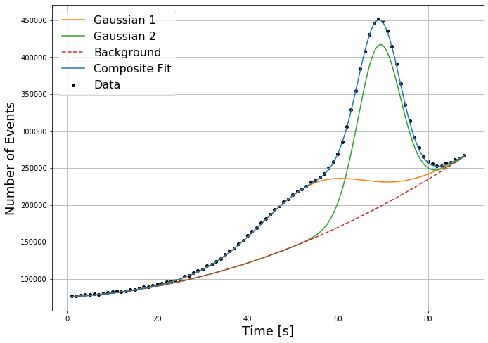

DA4 - Unfair Science
Our current world is build on science, however, sometimes science can be deceiving...

Figure 3.4: Measurement results of a 88 second exposure using our new Odinnadtsat Counter.
Although the counter has a significant time drift for these kind of exposure times, it can be modelled quite accurately as a second degree polynomial.
Therefore, it is still capable of identifying a composite Gaussian signal.
The resulting best-fit parameters are shown below up to their accuracy level.
| BG + Drift | x2 | x | 1 |
| 21 | 306 | 75638 | |
| Signal Fit 1 | A | μ | σ |
| 74143 | 54.43 | 11.85 | |
| Signal Fit 2 | A | μ | σ |
| 219085 | 69.18 | 4.72 |
The data files:
Odinnadtsat Counter.xlsx, Odinnadtsat Counter.csv